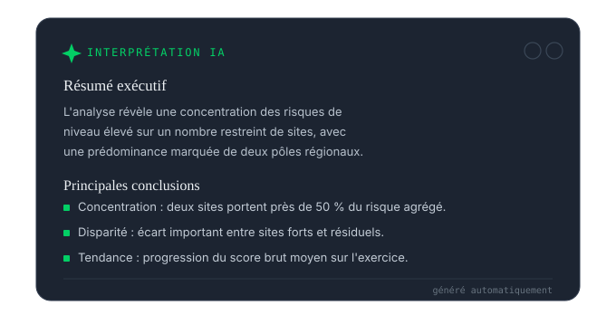
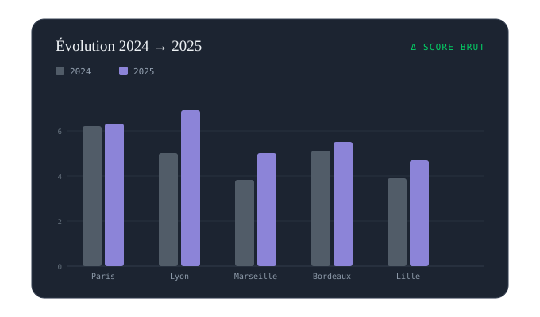

Fachbereich — Risikomanagement
Kartieren. Bewerten. Entscheiden.
Verwandeln Sie Ihre Risikoregister in eine lebendige Kartierung — abfragbar in natürlicher Sprache, laufend aktualisiert.

Fachbereich — Risikomanagement
Verwandeln Sie Ihre Risikoregister in eine lebendige Kartierung — abfragbar in natürlicher Sprache, laufend aktualisiert.
Kartierung
Ihre Risikodaten aggregiert auf einer interaktiven Heatmap — nach Bereich, nach Einheit, nach Datum. Ohne Export, ohne Tabellenkalkulation.

Priorisierung
Positionieren Sie jedes Risiko auf der Matrix, indem Sie Ihre Daten befragen — ohne die Tabelle bei jeder Kampagne von Hand neu aufzubauen.
Langzeitverfolgung
Vergleichen Sie zwei Perioden, messen Sie die Wirkung Ihrer Maßnahmenpläne und dokumentieren Sie jede Entscheidung für das nächste Audit.

Integriertes Fachkorpus. Die Referenzrahmen und Marktpraktiken der AMRAE (Risiko- und Versicherungsmanagement im Unternehmen) sind in Query Vision und Spot Vision hinterlegt — Ihre Agenten sprechen die Sprache Ihrer Risikofunktion vom ersten Tag an.
Nächster Schritt
Eine Demonstration auf einer Stichprobe Ihrer Daten, mit Ihrem Fachvokabular. Unverbindlich — und ohne dass etwas Ihren Perimeter verlässt.